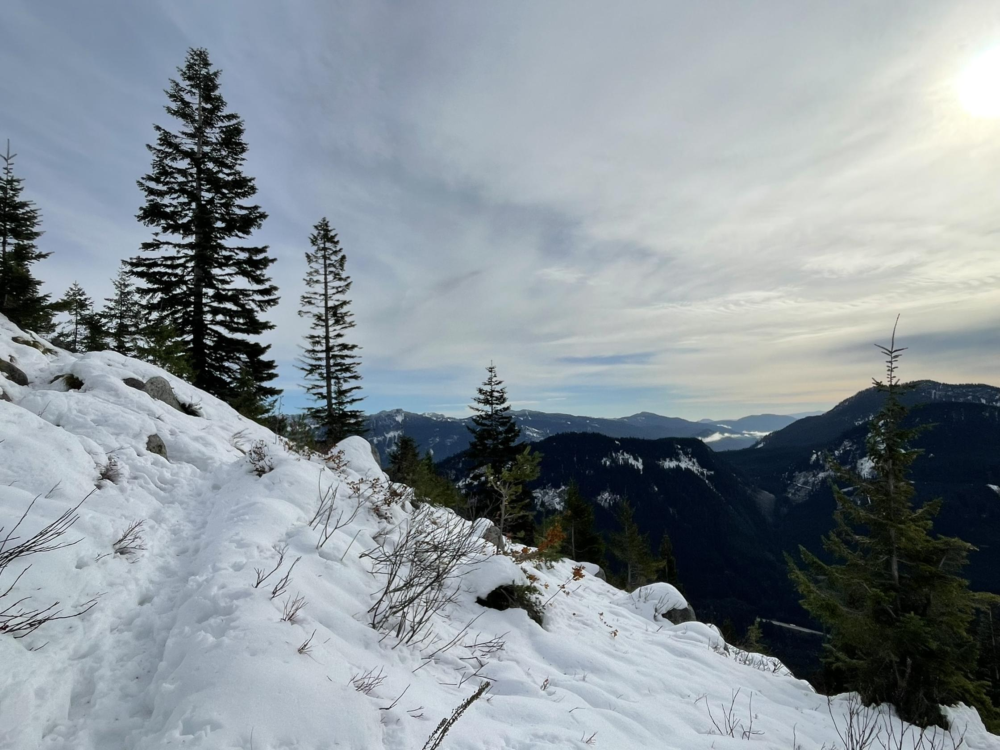
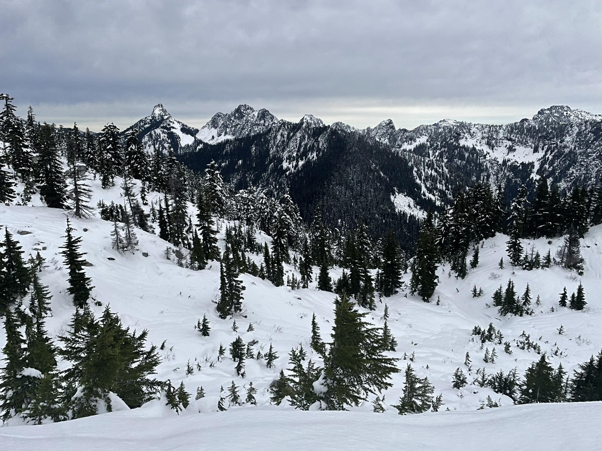
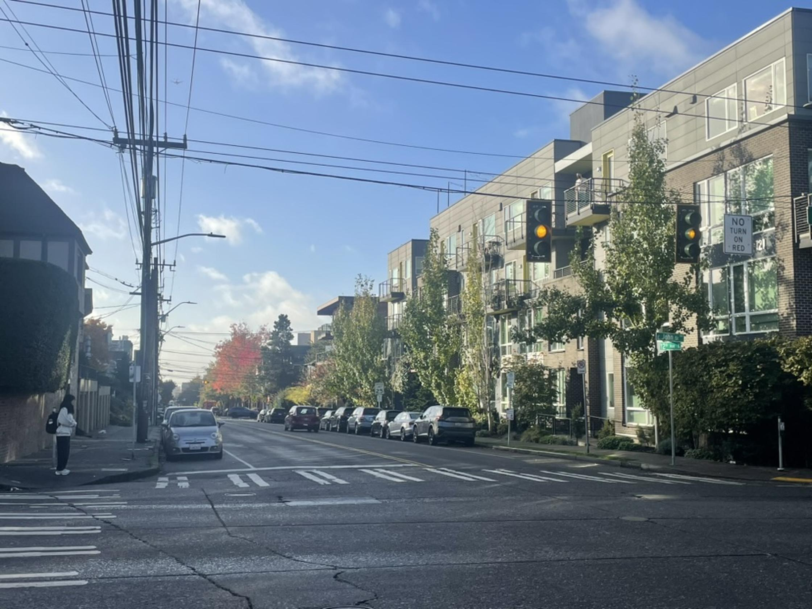
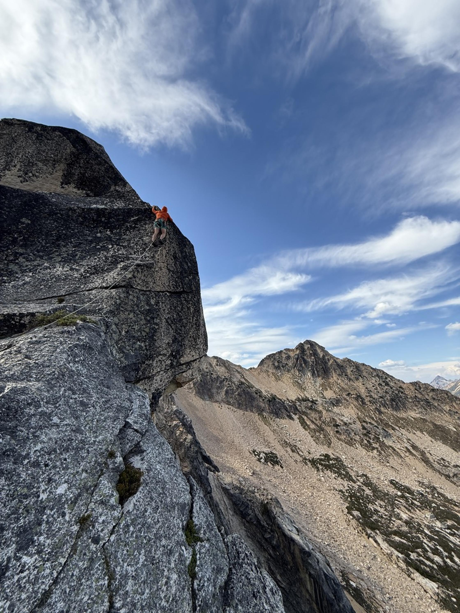
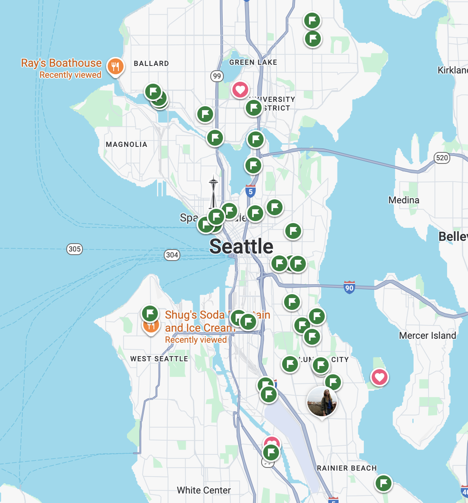

Happiness is a Warm Bun
November 23, 2025

It's winter up on Granite Mountain and that doesn't quite suit me.
Last Thursday, on a day off from work, I drove there for a hike, hoping to shake off a little melancholy. It's the time of year when everything in (and outside) the woods must submit to that PNW inevitability: it's wet and it's going to stay that way til May. Soggy leaves cake the trails. Rocks are slick and cold to the touch. It has the feeling of a respiratory illness out there.
The trail up Granite is one of the standard hikes along I-90 toward Snoqualmie Pass. It's about four miles and 4,000 feet of gain from parking lot to top. Being farther up the pass and slightly higher in elevation, the trail overcomes the treeline earlier than on neighboring hikes, which is why I picked it. I wanted to be above the trees where the air is crisp and the views are long. I didn't look forward to the solo slog it'd take to get up there.
I put on my boots and left the car a little grumpy. I knocked out the switchbacks in the woods, got steadily higher. The ferns thinned and the pines replaced the deciduous trees. An hour and a half in, the snow became more consistent. When I got above the trees I confirmed a suspicion that's been rattling around upstairs for a few months: I wasn't getting what I used to get out of hiking.

The trip up Granite was a good workout, sure. I enjoyed a few moments appreciating the radiant orange maple leaves low down. And a hint of awe when I stared down the mountain's doglegging avalanche chute, a tree-stripped path from summit to bottom that'd be pummeled by acre-feet of snow in the coming months.
But I'd seen all that before. I'd hiked up Granite two years prior, but really all hikes had started to look similar of late. Those mountains around Granite that I knew better than any other mountains in the world seemed smaller than they did four years ago.
Up in the alpine, the snow on the trail was two feet deep, though cut by a solid boot path. The wind held steady at 20 mph and it was somewhere near 30 degrees Fahrenheit. I threw on my fleece over my sweaty t-shirt. I threw on my puffy jacket. I threw on gloves.
Then the booter disappeared and I was breaking trail on a two inch crust over three feet of unconsolidated snow. It was hard work. I'd punch through the crust to my thigh, but only on every third step or so. I'd kick a few times into the powder to tamp down a platform, then step high out of the posthole, then punch through again. In twenty minutes, I'd gained only a few hundred vertical feet. I looked up at the summit, still six hundred vertical feet and half a mile away, and I thought, "What da fuq am I doing here?"

In contrast: two weeks ago I made the twenty minute drive across Lake Washington to visit Tofu 101, a Taiwanese deli in Factoria. I'd been hunting for a place to get hot soy milk and Chinese doughnuts, nostalgic for a memorable breakfast I'd had in Taipei last year.
I parked in the strip mall lot outside Tofu 101 and walked through the front door which - it turns out - is one of those real life Narnia Wardrobe portals. Outside was Washington, a Target, a Bank of America, Interstate 90. Inside was Taiwan. The thickness of a pane of glass separated them. Twenty minutes from my front door. That ruled.
Across the threshold, English was no longer lingua franca and I was self conscious of where I stood, how I stood, what I was going to order and how I'd order it. I scanned a fridge full of pre-made buns, tofu, pudding, and half-gallon jugs of soy milk. Besides all the grab and go, there was a short menu: pork over rice with a boiled egg and pickled veggies, or a rice roll stuffed with pork floss, a twice-fried Chinese donut, and pickles. And the hot soy milk, which came from a fat thermos behind the counter. I ordered the whole menu and grabbed a stack of green onion and pork buns from the fridge.
The hot food was solid and the soy milk ... I don't know what to say. Soy milk! A glass of warm milk is weird. I love it. If we were in the U.S. we might think it backwards for a 34-year-old to slam a glass of warm milk by himself in the front seat of his car. Can't take the Ohio out of the boy and all.
But as stated previously, this was not the U.S. The soy was semi-sweet, simple. It heated my throat and stomach like a hot coffee would, but without the over-caffeination. It all seemed very sensible.
The real prizes, though, were the green onion and pork buns from the fridge. For dinner on the following Monday and Tuesday both, I heated a bun or two in the oven for a few minutes at 400 degrees. Then I sat on my couch and put a show on the TV. I absolutely savored the nugget of pork whose sweet juice soaked into the buns' soft dough. Warm in my hands, warm in my belly. I was safe and satisfied.

Four years ago I moved to Seattle for a few reasons, not least being the itch to hike more. The itch, in part, was in response to my waning interest in what I'd been doing in Chicago, where someone could spend a life eating and drinking their way around the city. (I tried, I got bored and also chubby).
I moved out and started hiking right away. Hiking led to mountaineering, then rock climbing and skiing. Each with its own skill ladder and long list of objectives (I've always hated that word in this context, though I haven't been immune to the mindset that comes with it). There were spectrums of difficulty and granular rating systems to progress through. When I put in time, I got better, and I could see it in the grades and in my fitness. For the first time in a while, I was driven.
I bought gear, I took classes. I put off other things, like work and dating.
In 2024, between April and June, I slept outside nine weekends in a row. The streak broke when I got Lyme disease (from a tick I picked up on a walk outside). I recovered, then slept outside ten of the following twelve weekends that summer. At the end of the year, I tallied 46 days of outdoor adventuring and I'd climbed somewhere around 108 pitches of rock.
In 2025, sensing a need for rest, I mixed in more weekends in town. But when I'd step away from the outdoor activities, I feared I was letting something slip. I'd think, there are only so many good weather weekends in Washington and you've got to take advantage of them. Or, I should at least do a conditioning hike because if I don't, I'll fall behind on my fitness.
More than a few times, up on some cliff that I'd elected to spend my weekend climbing, I'd feel the sharp edge of actual fear - for one's physical safety, not of the abstract idea of loss - stab into the bottom of my stomach. I'd swear off climbing. I'd wonder why I was spending all my free time feeling that way.

How do we stay happy when seasons change? In this moment, I enjoy not waking up to an alarm. Not having a schedule. I'm leaning into the early darkness and devoting whole evenings to Silksong on my Nintendo Switch. I crank the heat in my apartment. I settle into my couch for a TV show over a bowl of cereal and whole milk, topped with blueberries and dark chocolate chips, 72% cacao.
I grieve my dried up passion for outdoor activity. It was a star that burned hard for three years. Through that time, it fueled a sense of purpose and identity for me. I learned how to tie butterfly knots that'd hold me if I dropped into a crevasse, how to place a quarter inch of spring-loaded metal in a rock so it'd preserve my life when I fell past it, how to achieve absolute focus on the task at hand - clipping a rope through a carabiner with one hand, say - while my fearful brain screamed bloody murder at me. But the star burned out. I burned out. To ignore that causes its own kind of pain.

So I'm picking up an old interest. I've got a backlog of green "Want to gos" flagged in Google Maps. Tofu 101 was on that list, but it's now a red hearted Favorite. When I go out to try a place on the map, I take the slow way and keep my eyes peeled. There are still streets in Seattle I haven't seen. Maybe the perfect breakfast spot lives on one of those streets. It's often the case that, when I'm on my way to my destination, I add one or two more places to try.
The list has grown as I eat my way around this town. So has my paunch. Or my winter weight, as my old baseball coach would say. If my drive for mountain sports return, I'll have to work off the paunch. But I'm not stressed.
The drive will come back. That's the way with seasons. The Earth is in motion and though Seattle isn't favored by the Sun right now, it was before. It will be again. These gears turn on a celestial scale.
It'd be silly to think I could hold on to anything past its time. It'd be shortsighted not to stay curious about where things are headed.